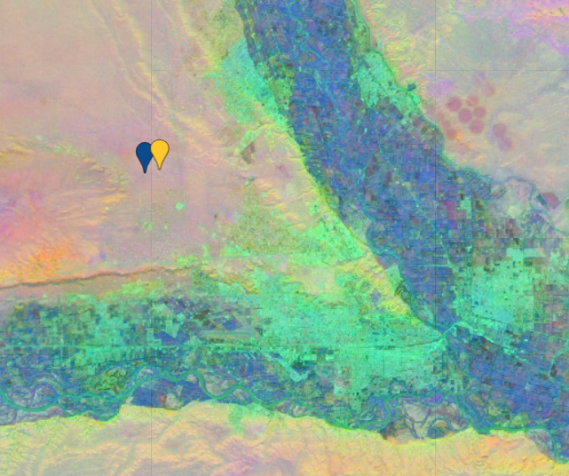
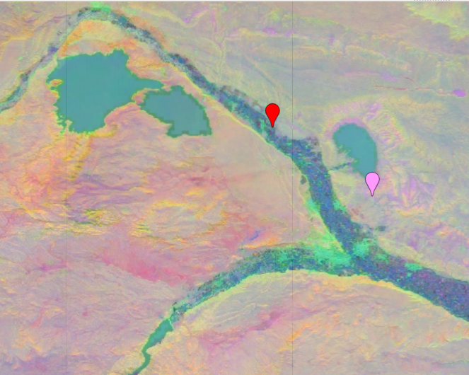
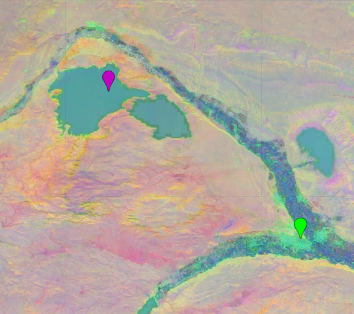

1. Introducción#
En este capítulo brindamos una introducción a la Cartografía Inteligente.
1.1. GeoIA, sensorización e interconexión en la Cuarta Revolución Industrial#
La unión entre inteligencia artificial e información geoespacial —lo que hoy llamamos GeoIA— está transformando profundamente nuestras disciplinas. Y lo hace en un contexto más amplio: el de la Cuarta Revolución Industrial, donde convergen tecnologías físicas, digitales y biológicas, redefiniendo la manera en que observamos, representamos y gestionamos el territorio. Uno de los motores clave de esta revolución es la sensorización permanente del planeta. Satélites, drones, estaciones meteorológicas, sensores urbanos e incluso dispositivos personales generan un flujo ininterrumpido de datos sobre el mundo físico. Esta sensorización alimenta tecnologías como el Internet de las Cosas (IoT), la Observación de la Tierra (EO) y, por supuesto, la propia GeoIA, que aporta algoritmos y modelos para transformar datos crudos en conocimiento útil. Pero no se trata de acumular datos. La característica distintiva de esta era es la interconexión digital total. Todo está vinculado: plataformas, sensores, usuarios, sistemas de decisión. Y ese entramado nos plantea un desafío enorme: acompañar esta transformación no solo desde lo tecnológico, sino también desde lo institucional, lo organizacional y lo social. En este sentido, la digitalización del territorio requiere un proceso de adaptación y maduración que no siempre avanza a la misma velocidad que los desarrollos tecnológicos. A pesar de la disponibilidad creciente de herramientas, todavía queda mucho por organizar, articular y aplicar. En numerosos contextos, la información disponible no se integra de manera sistemática en los procesos de planificación, evaluación o gestión. Las decisiones políticas y muchas políticas públicas aún no logran apoyarse plenamente en datos geoespaciales actualizados, interoperables y confiables. No por falta de voluntad, sino porque los marcos institucionales, los recursos técnicos y las dinámicas de articulación intersectorial aún presentan desafíos importantes. De hecho, aún no hemos consolidado una “sociedad habilitada espacialmente” —en los términos propuestos por Naciones Unidas—, en la cual ciudadanía, organismos públicos y comunidad científica compartan un ecosistema de información geográfica abierto, confiable y útil para actuar con mayor inteligencia territorial. Además, la articulación entre instituciones suele ser insuficiente o reactiva, especialmente en temas clave como la prevención de riesgos, la respuesta ante emergencias o la gestión integral del territorio. A menudo, faltan mecanismos estables de cooperación interjurisdiccional, así como políticas claras que reconozcan a los datos geoespaciales como bienes públicos estratégicos. Por eso, el desafío no es solo técnico. Es también cultural, político e institucional. Se trata de avanzar desde la disponibilidad tecnológica hacia una verdadera gobernanza del dato; de los pilotos aislados hacia estrategias de largo plazo; de la promesa digital hacia una transformación territorial efectiva, inclusiva y sostenible. Construir esa articulación es una tarea colectiva. Como profesionales de la información geoespacial, tenemos el compromiso de tender puentes: entre disciplinas, entre escalas, entre niveles de gobierno, y entre el conocimiento técnico y los procesos de toma de decisiones. Solo así lograremos que la GeoIA, las IDE y las nuevas formas de representación semántica del territorio contribuyan de forma real y duradera a una planificación más justa, a una gestión más anticipatoria y, en última instancia, a un desarrollo verdaderamente sostenible.
1.2. Cartografía dinámica e infraestructuras de datos espaciales#
En este nuevo paradigma, la cartografía deja de ser un producto estático para convertirse en un sistema vivo. Ya no hablamos de mapas impresos que reflejan un momento puntual, sino de geoservicios dinámicos, alimentados por datos que se actualizan en tiempo real y que se integran desde múltiples fuentes heterogéneas. Desde una perspectiva técnica, podríamos decir que hemos pasado de una cartografía monolítica a una arquitectura basada en microservicios, donde cada componente —una capa, una API, un sensor, una visualización— cumple un rol específico dentro de un ecosistema geoespacial distribuido y orientado a servicios. En este entramado, ocupan un lugar central las Infraestructuras de Datos Espaciales (IDE). Lejos de ser meros catálogos de datos, las IDE constituyen un soporte técnico, normativo y organizacional, que garantiza que la información geográfica sea descubierta, accedida, combinada, reutilizada y compartida con criterios de interoperabilidad. Y es fundamental recordar que no se trata solo de IDE territoriales, sino también marítimas y atmosféricas, que integran variables sobre océanos, viento, humedad, temperatura, presión o calidad del aire, entre muchas otras. Junto con los estándares abiertos del OGC y los principios FAIR (Encontrables, Accesibles, Interoperables, Reutilizables), las IDE permiten construir plataformas inteligentes de gestión territorial, donde la GeoIA puede operar con eficacia para generar mapas predictivos, detectar anomalías o clasificar patrones del paisaje. Ahora bien, este despliegue técnico no reemplaza, sino que complementa la larga tradición del Sistema de Información Geográfica (SIG) como instrumento clave del análisis espacial. Durante décadas, los SIG han sido herramientas fundamentales para integrar datos, aplicar modelos, ejecutar consultas geográficas y producir evidencia espacial para la toma de decisiones. Lejos de ser espacios disjuntos, SIG e IDE forman hoy un continuo operativo. En esta época de interconexión digital, geoservicios y microservicios, el análisis geoespacial puede realizarse tanto desde la interfaz visual y analítica de un SIG, como desde su integración directa con entornos de programación. Las plataformas modernas —como QGIS, ArcGIS Pro, ArcGIS Notebook Server, entre otras— permiten extender el poder del SIG a través de lenguajes de programación como Python o R, habilitando procesos reproducibles, automatizados y escalables. Estos entornos integran múltiples librerías geoespaciales (como Geopandas, Rasterio, Shapely, pyproj, leaflet, tmap, terra, entre muchas otras) que permiten implementar algoritmos avanzados, análisis estadístico, machine learning y visualización interactiva. En este nuevo escenario, el pensamiento algorítmico geoespacial se convierte en una competencia central. Ya no se trata solo de operar herramientas, sino de diseñar flujos de trabajo inteligentes que integren datos de múltiples fuentes, apliquen modelos de inferencia espacial, y produzcan salidas comprensibles, útiles y adaptadas al problema territorial. Así, la cartografía dinámica se apoya tanto en servicios distribuidos como en el razonamiento espacial algorítmico, conjugando lo mejor del análisis tradicional con las nuevas formas de producción geoespacial del presente.
1.3. Sostenibilidad y el rol de la información geoespacial según Naciones Unidas#
Todo este ecosistema tecnológico y cartográfico se articula con un objetivo mayor: la sostenibilidad del planeta. Las Naciones Unidas han reconocido expresamente que la información geoespacial es clave para alcanzar los Objetivos de Desarrollo Sostenible (ODS), en sus tres dimensiones:
la económica, porque permite optimizar recursos e infraestructuras,
la social, porque mejora la equidad territorial y el acceso a servicios,
y la ambiental, porque ayuda a monitorear y proteger los ecosistemas.
La GeoIA, en articulación con las IDE y la transformación digital, potencia nuestra capacidad de planificar, anticipar y actuar con inteligencia territorial. Nos permite responder con evidencia a los desafíos más urgentes del siglo XXI: el cambio climático, la gestión del agua, la expansión urbana, la prevención de desastres o la seguridad alimentaria. En definitiva, la información geoespacial no es un dato más, sino un componente estructural de las políticas públicas, la ciencia, la tecnología y el desarrollo.
1.4. Aprendizaje automático y nuevos verbos para la cartografía#
En los últimos años, el aprendizaje automático (Machine Learning) se ha convertido en una herramienta fundamental para el análisis geoespacial, aportando nuevas capacidades que enriquecen y expanden la práctica cartográfica tradicional. A diferencia de los enfoques deterministas o manuales, el aprendizaje automático permite que los algoritmos aprendan directamente de los datos. En lugar de escribir reglas explícitas, entrenamos modelos que detectan patrones latentes en conjuntos de datos, generalizan comportamientos, y pueden clasificar, predecir o inferir información a partir de nuevas observaciones. En este contexto, el Machine Learning incorpora nuevos verbos a la caja de herramientas cartográfica. Estas nuevas capacidades del aprendizaje automático pueden agruparse en una serie de posibilidades concretas que amplían las formas tradicionales de trabajar con información geoespacial. Entre ellas, podemos destacar:
Clasificar grandes volúmenes de imágenes satelitales en categorías significativas —como tipos de cobertura y uso del suelo, vegetación, cuerpos de agua, áreas urbanas o superficies desnudas—, permitiendo generalizar a partir de ejemplos puntuales y construir mapas temáticos de gran escala con rapidez y consistencia.
Predecir variables geográficas o fenómenos ambientales a partir de datos históricos, como la evolución de la cobertura forestal, el avance de zonas urbanas, el rendimiento agrícola, o el riesgo de incendios. Esto convierte al ML en una herramienta de anticipación territorial clave.
Comprender estructuras latentes en los datos, es decir, relaciones no evidentes a simple vista, como patrones espectrales complejos, combinaciones multibanda, o regularidades contextuales que solo se revelan al analizar múltiples dimensiones de los datos con algoritmos especializados.
Detectar anomalías, transiciones o procesos dinámicos en el tiempo, como cambios de uso del suelo, pérdida de cobertura vegetal, inundaciones, o desplazamientos de cuerpos de agua, especialmente cuando se trabaja con imágenes multitemporales o cubos de datos.
Reconocer objetos geográficos o fenómenos concretos en imágenes de muy alta resolución, como construcciones individuales, caminos rurales, huellas de edificaciones, invernaderos, tanques, techos o incluso vehículos. Este tipo de tareas de detección requieren generalmente modelos de deep learning, particularmente redes convolucionales (Convolutional Neural Networks, CNN), entrenadas sobre grandes volúmenes de imágenes anotadas.
Aquí es importante subrayar un aspecto técnico fundamental: la resolución espacial de las imágenes determina en gran medida qué tipo de tareas son posibles aplicar con Machine Learning o Deep Learning. Por ejemplo, los sensores ópticos como Sentinel-2 —con una resolución de 10 a 60 metros por píxel según la banda— son ideales para detectar patrones regionales como agricultura extensiva, cambios de cobertura, cuerpos de agua, o zonas urbanas generales. Sin embargo, no permiten identificar detalles finos, como edificaciones individuales, techos, calles angostas o elementos menores, ya que su tamaño es inferior al tamaño de píxel. En cambio, las imágenes captadas por drones, o por satélites comerciales como WorldView o PlanetScope, ofrecen resoluciones submétricas (de 30, 20 o incluso 10 centímetros por píxel), lo que habilita el análisis a nivel de objeto. Al combinar esta alta resolución con técnicas de deep learning, es posible entrenar modelos capaces de detectar automáticamente objetos específicos en el paisaje: viviendas precarias, instalaciones industriales, elementos de infraestructura crítica, entre otros. Por eso, la elección del sensor y la resolución de las imágenes es un paso crítico dentro del workflow de análisis con ML o DL, ya que define el nivel de detalle, escala y tipo de fenómeno que puede abordarse. No es lo mismo clasificar una región entera por tipo de uso del suelo, que detectar techos individuales o cicatrices en el terreno. Entender esta diferencia es esencial para diseñar flujos de trabajo coherentes, efectivos y ajustados al objetivo del análisis. Estas capacidades no surgen mágicamente. Requieren de una metodología ordenada, conocida como workflow de clasificación supervisada, que suele incluir:
La selección de un conjunto de imágenes satelitales representativas,
La construcción de un conjunto de entrenamiento, con ejemplos etiquetados (por expertos o por muestreo guiado),
La elección de un modelo de clasificación (como CART, Random Forest o SVM),
El entrenamiento del modelo sobre los datos conocidos,
Su aplicación sobre áreas extensas o nuevas fechas,
Y la evaluación rigurosa de los resultados obtenidos.
Quienes deseen profundizar en este enfoque y practicarlo con ejemplos reales, pueden acceder al libro digital colaborativo “GeoIA aplicada a imágenes satelitales”, desarrollado en el marco del proyecto Patagonia Interoperable. Allí se presentan, de forma conceptual y didáctica, todos los pasos de este proceso, incluyendo el desarrollo de algoritmos en Google Earth Engine, la comparación de clasificadores como Árboles de Decisión (CART), Bosques Aleatorios (Random Forest) y Máquinas de Vectores de Soporte (SVM), y la interpretación de los resultados con métricas específicas de precisión.
1.5. De imágenes satelitales a cubos de datos: sumar la dimensión temporal#
Ahora bien, cuando incorporamos series de tiempo en el análisis —es decir, múltiples imágenes del mismo lugar a lo largo de los meses o años— se abre un nuevo horizonte metodológico y conceptual. Ya no estamos trabajando solo con un mapa estático, sino con un cubo de datos satelitales donde cada píxel contiene información en varias dimensiones:
La dimensión espacial, que indica dónde ocurre un fenómeno;
La dimensión espectral, que describe cómo se refleja o emite energía en distintas longitudes de onda;
Y la dimensión temporal, que revela cuándo ocurre, se repite o cambia una condición en el territorio.
El uso de datacubes nos permite detectar estacionalidades, transformaciones graduales, eventos abruptos o tendencias de largo plazo, con un nivel de detalle y contextualización antes inalcanzable. Este enfoque multitemporal también se potencia cuando se integra con Machine Learning. Por ejemplo, podemos entrenar modelos no solo para clasificar un tipo de suelo, sino para identificar su evolución temporal: expansión agrícola, urbanización, deforestación, etc. De esta manera, los algoritmos dejan de ser una herramienta puntual y se transforman en instrumentos de seguimiento, monitoreo y anticipación territorial.
1.6. Camino hacia los modelos fundacionales#
Todo este recorrido —desde la clasificación supervisada, pasando por las series de tiempo, hasta la estructuración de cubos de datos— prepara el terreno para una nueva etapa: la aparición de los modelos fundacionales. A diferencia de los modelos clásicos que se entrenan para una tarea específica, los modelos fundacionales (como AlphaEarth Foundations) se entrenan con volúmenes masivos y diversos de datos geoespaciales, buscando aprender una representación semántica general del territorio. A partir de estos modelos se generan los llamados embeddings o vectores semánticos, que condensan la información de cada píxel en una estructura abstracta de alta dimensión. Y es gracias a ellos que hoy podemos avanzar hacia una cartografía semántica, donde los datos ya no solo nos dicen “cuánto” refleja un píxel, sino qué significa ese lugar.
1.7. De la cartografía visual a la geosemántica: una nueva representación del territorio#
Pensemos ahora en cómo conectar la cartografía clásica y la observación de la Tierra con esta idea más moderna de la geosemántica. Durante décadas, la cartografía y las imágenes satelitales se basaron principalmente en la teledetección, captando la radiación reflejada o emitida por la superficie terrestre para representarla en mapas. Cada píxel era una unidad de medición radiométrica. A partir de esa base física, surgieron índices espectrales como el NDVI, el NDWI o el NDBI, que nos permitieron identificar vegetación, cuerpos de agua o zonas urbanas, respectivamente. Pero hoy estamos dando un paso más allá. Con la geosemántica, comenzamos a modelar el territorio no solo como un conjunto de mediciones físicas, sino como un espacio latente, es decir, un espacio abstracto de representaciones vectoriales que capturan el significado profundo de los datos geoespaciales. Ya no se trata solamente de visualizar un píxel, sino de comprender conceptualmente qué representa: un tipo de objeto territorial, un patrón de transformación del paisaje, una categoría normativa o incluso un proceso histórico. Este cambio es posible gracias al desarrollo reciente de modelos fundacionales geoespaciales, entrenados mediante técnicas de deep learning. El deep learning —o aprendizaje profundo— es un enfoque dentro del aprendizaje automático (machine learning) que se basa en redes neuronales artificiales con múltiples capas, capaces de aprender representaciones complejas directamente a partir de grandes volúmenes de datos sin necesidad de reglas explícitas. Uno de los avances más notables en este campo es el modelo AlphaEarth Foundations (FM4EO), desarrollado por el equipo de AlphaEarth y Google DeepMind. Este modelo fundacional fue entrenado a partir de cientos de millones de parches de imágenes satelitales multitemporales. Específicamente, el conjunto de entrenamiento incluyó más de 500 millones de muestras, extraídas de distintos sensores ópticos como Sentinel-2 y Landsat, con cobertura global y diversidad temática. Durante su entrenamiento, el modelo aprende a codificar patrones espaciales, temporales y espectrales en vectores de alta dimensionalidad conocidos como embeddings. Estos embeddings no describen cada píxel en términos de reflectancia, sino que condensan su “firma semántica latente”, es decir, una representación abstracta que resume lo que ese lugar “es” o “hace” en términos de función territorial, cobertura, dinámica o contexto. Como resultado de este proceso, se genera un modelo capaz de transformar cualquier imagen de entrada en un vector semántico de 64 dimensiones, lo que permite realizar búsquedas por similitud, análisis de cambio, agrupamientos, clasificaciones o razonamientos espaciales más allá de lo visible. Este enfoque fue implementado de manera abierta por Google Earth Engine en el dataset llamado Satellite Embedding V1 (GOOGLE/SATELLITE_EMBEDDING/V1/ANNUAL). Allí, cada píxel del planeta cuenta con un embedding correspondiente a cada año, desde 2016 en adelante. Estos vectores fueron generados por el modelo fundacional FM4EO, y representan una codificación semántica del territorio, lista para ser comparada, agrupada o interpretada en flujos de trabajo geoespaciales. Estamos, entonces, pasando de una cartografía visual y descriptiva a una cartografía semántica y conceptual. Una cartografía que no solo es comprensible para humanos, sino también legible para máquinas. Esto permite que agentes automáticos —como asistentes virtuales, sistemas de recomendación o modelos predictivos— puedan razonar sobre el territorio con autonomía, contexto y significado. Esta es la gran evolución: la cartografía no solo se digitaliza, sino que se enriquece semánticamente, se vuelve más inteligente, y abre la puerta a una colaboración profunda entre humanos, máquinas y datos. Por primera vez, podemos preguntarle a los datos “qué significan” más allá de “cuánto valen”. Y con ello, no solo cambiamos la forma en que vemos el territorio: cambiamos la forma en que lo entendemos.
1.8. Algunos algoritmos que encontrarás en este libro digital.#
1.8.1. ¿Cómo comparar la similitud coseno entre dos embeddings?#
Accede al codigo: Código: https://code.earthengine.google.com/e53110c81887b7e20b5170b25f71f838 El script te permitirá comparar pares de embeddings correspondientes a distintos casos, para analizar similitud coseno y ángulo:
Terreno Desnudo & Terreno Desnudo
Similitud coseno: 0.95
Ángulo (grados): 12.64
{kind=link}

Fig. 1.1 Similitud coseno de dos embeddings correspondientes a Terreno Desnudo#
Arena & Cultivo
Similitud coseno: 0.18
Ángulo (grados): 79.60
{kind=link}

Fig. 1.2 Similitud coseno de dos embeddings correspondientes a terreno desnudo y cultivo respectivamente.#
Agua & Urbano
Similitud coseno: 0.24
Ángulo (grados): 75.03
{kind=link}

Fig. 1.3 Similitud coseno de dos embeddings correspondientes a Agua y Urbano#
1.8.2. K-means con embedding#
El capítulo 3 describe la aplicación de entrenamiento no supervisado (k-means) utilizando embeddings.
Código: https://code.earthengine.google.com/56d2bf1dec46056da4e4507e5a4f80f1
1.8.3. ¿Cómo realizar un normalización L2 de un embedding?#
El apéndice C te explica como realizar una normalización L2, para transformar un embedding de Rn a Sn-1.
1.8.4. Detección de Cuerpos de Agua#
El script detecta cuerpos de agua identificando píxeles cuyos embeddings satelitales sean similares a los embeddings promedio de un conjunto de polígonos de agua que vos definís como referencia. Para eso usa el mosaico anual de GOOGLE/SATELLITE_EMBEDDING/V1, obtiene en cada polígono un vector representativo del comportamiento espectral-temporal y luego compara cada píxel de la ROI con todos esos vectores mediante similitud coseno, quedándose con el valor más alto para capturar el “tipo de agua” más parecido.
Con ese cálculo construye un raster continuo de cosine closeness (0 a 1), donde los valores altos indican pixeles muy próximos en el espacio de embeddings a alguna muestra de agua. A partir de este mapa se segmentan automáticamente áreas con similitud ≥0.98, ≥0.99 y ≈1.0, que pueden filtrarse con la máscara de agua de JRC y por un área mínima para eliminar falsos positivos. El resultado final son polígonos de alta probabilidad de agua (98/99/≈100 %) que se visualizan en el mapa y pueden exportarse como un FeatureCollection para análisis posteriores.
El script detecta cuerpos de agua midiendo cuán similares son los embeddings satelitales de cada píxel respecto a vectores promedio obtenidos de polígonos de agua de referencia, usando similitud coseno y generando una capa continua de cosine closeness (0–1) que indica ese grado de parecido. Luego extrae y muestra polígonos con ≥98%, ≥99% y ≈100% de similitud, produciendo una delimitación precisa de agua basada en embeddings.
Código: https://code.earthengine.google.com/bb6b22b147b31fa06f4331523f99974a
1.8.5. Detección de Ladrilleras#
El script busca ladrilleras detectando píxeles cuyo embedding satelital se parece al embedding promedio de varios polígonos de ladrilleras que vos definís como muestra. Para eso arma un mosaico anual de GOOGLE/SATELLITE_EMBEDDING/V1, calcula un vector promedio de embeddings dentro de cada polígono de ladrillera y luego, en toda la ROI, computa la similitud coseno entre el embedding de cada píxel y el de cada muestra, quedándose con el valor máximo. Ese mapa continuo de “cosine_closeness” (0–1) indica qué tan “ladrillera-like” es cada píxel.
Después aplica una serie de filtros POST “fail-open” usando Sentinel-2 (NDVI, NDBI, BSI), Sentinel-1 (VV/VH en dB) y la máscara de agua JRC: cada filtro solo se aplica si no deja la cobertura casi en cero, de modo que el flujo nunca se “autodestruye” por umbrales demasiado duros. Sobre la similitud enmascarada vectoriza las zonas con cosine_closeness ≥0.98, ≥0.99 y ≈1.0, filtrando por área mínima y máxima para descartar slivers o polígonos gigantes, y genera capas de “ladrillera-like” en distintos niveles de confianza, más un umbral adaptativo de respaldo basado en el percentil 99. Estas capas pueden visualizarse en el mapa y exportarse como polígonos para análisis posteriores.
Código: https://code.earthengine.google.com/016b584f634eb08644b776fd7c357a7a
1.8.6. Clasificación de cultivos (Vid, Manzana, Pera, Alfalfa y Horticultura)#
Esta clasificación es un ejercicio preliminar y en desarrollo. Utiliza embeddings satelitales anuales, Dynamic World y índices espectrales de Sentinel-2, entrenando y evaluando un Random Forest con muestras de campo: El script arma primero un conjunto robusto de muestras de entrenamiento para cinco cultivos (Vid, Manzana, Pera, Alfalfa, Horticultura) a partir de coordenadas puntuales, construye una ROI alrededor de esos puntos y genera una máscara agrícola combinando ESA WorldCover, MODIS y Dynamic World para quedarse solo con áreas plausibles de cultivo. Sobre esa región carga los embeddings satelitales anuales (GOOGLE/SATELLITE_EMBEDDING/V1), les suma probabilidades de Dynamic World (crops/trees) y un paquete de índices espectrales estacionales (NDVI, EVI, NDRE, NDWI) calculados con Sentinel-2, obteniendo así una imagen de entrada muy rica en características.
Con esas features extrae valores en las muestras, espacía los puntos para evitar sobre-representación por clase, hace un split estratificado 80/20 (train/valid), balancea solo el set de entrenamiento, y entrena un Random Forest. Luego evalúa el modelo (matriz de confusión, accuracy, kappa, F1 macro y ponderado) y aplica el clasificador a toda la ROI, refinando específicamente la clase Vid con reglas adicionales basadas en Dynamic World y NDVI. Finalmente, vectoriza los parches de cada clase por encima de un área mínima, pinta el mapa categórico con una paleta fija, agrega una leyenda de cultivos y un panel con un gráfico de barras que muestra la superficie (en hectáreas) de cada clase dentro de la región.
Código: https://code.earthengine.google.com/cc6164e12ac1e40f832437520296dd0c
1.8.7. Detección de cambios de 2021 a 2024#
En desarrollo: https://code.earthengine.google.com/583f79e5f890c8f8c70337bf0ab3d0b8